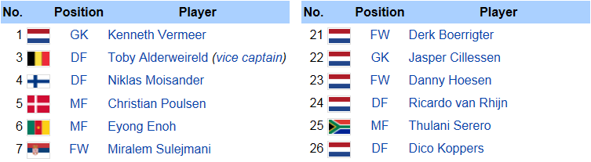
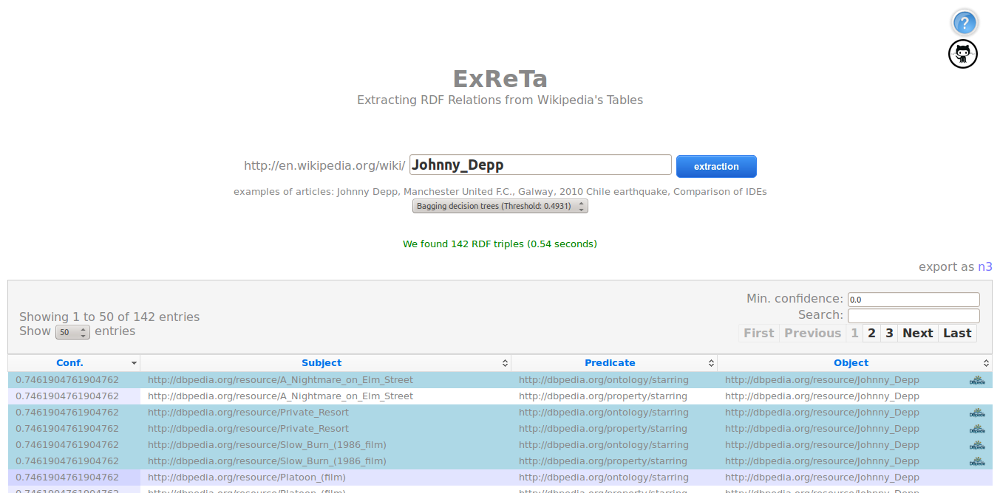

Extracting RDF Relations from Wikipedia’s Tables
Abstract
We propose that existing RDF knowledge-bases can be leveraged to extract facts (in the form of RDF triples) from relational HTML tables on the Web with high accuracy. In particular, we propose methods using the DBpedia knowledge-base to extract facts from tables embedded in Wikipedia articles (henceforth "Wikitables"), effectively enriching DBpedia with additional triples. We first survey the Wikitables from a recent dump of Wikipedia to see how much raw data can potentially be exploited by our methods. We then propose methods to extract RDF from these tables: we map table cells to DBpedia entities and, for cells in the same row, we isolate a set of candidate relationships based on existing information in DBpedia for other rows. To improve accuracy, we investigate various machine learning methods to classify extracted triples as correct or incorrect. We ultimately extract 7.9 million unique novel triples from one million Wikitables at an estimated precision of 81.5%.
Motivating Example

This image presents a Wikitable abridged from the "AFC Ajax" Wikipedia article, containing relations between players, their shirt number, country and position. There are also relations between players and the entity described by the article (their current club is AFC Ajax). Suppose the following SPARQL query to find relations between the context entity and various entities mentioned in the table cells:
SELECT ?rel WHERE { dbr:Kenneth_Vermeer ?rel dbr:AFC_Ajax }
This query returns the relationship dbp:currentclub. We find DBpedia triples with predicate dbp:currentclub relating 9/12 entities in the Player to the protagonist dbr:AFC_Ajax. For the remaining three players in those columns, our system can thus suggest the following triples as candidates for extraction:
dbr:Niklas_Moisander dbp:currentclub dbr:AFC_Ajax . dbr:Christian_Poulsen dbp:currentclub dbr:AFC_Ajax . dbr:Danny_Hoesen dbp:currentclub dbr:AFC_Ajax .
Architecture
Specifications
All the codes are written using Java 6.0 and eclipse framework. To compile, each package contains a build.xml file to be used by ant.
We use English-language data from DBpedia v3.8, describing 9.4 million entities. For answering queries that look for relations between a pair of resources, we use local indexes of DBpedia knowledge-base, and for each pair, we perform two atomic on-disk lookups for relations in either direction.
Important The used indexes are not included in the repository given their size (ca. 9G), but are available under request. See contact information.
Packages
The system is modularized into the following packages:
Wikitables-demo
The web application built using Spring MVC that integrates the extraction and classification of RDF triples.
Wikitables-engine
The core or engine that performs the extraction of the RDF triples.
Wikitables-ml
For a given set of extracted triples, this performs the prediction and returns correct or incorrect label for each triple.
Wikitables-dal
Contains the classes that represent the model of the entire application.
Wikitables-evaluation
Extract statistics from DBpedia to help in the features definition.
Wikititles-index
An index used to fill the autocomplete data in the web application.
Machine Learning
We also make available in this repository the training set used to build our machine learning models comprising 503 examples in two formats.
These can be used to validate our results and try new machine learning schemas. wikitables-training-set file shows the feature vectors extracted for each example which are formatted using SVMLight format as follows:
<line> .=. <target> <feature>:<value> <feature>:<value> ... <feature>:<value> # <info> <target> .=. +1 | -1 <feature> .=. <integer> <value> .=. <float> <info> .=. <string>
where the target value and each of the feature/value pairs are separated by a space character. The <info> field contains
the URL from where the example cames from and the <s,p,o> RDF triple.
Example
Two examples of feature vector for extracted RDF triples.
-1 1:2 2:2 3:15 4:17 5:0.88235 6:238 7:8 8:4 9:10 10:26 11:0.384615 12:10 13:12 14:0.83333 15:19 16:3 17:0.165405 18:0.198375 19:0.162472 20:11.202128 21:1 22:2 23:0.5 24:3 25:11 26:0 27:0 28:0.0 29:0.0 30:0.0 31:3 32:0.2 33:20 34:0.15789 35:3 36:0.15789 37:2 38:1 # Hans_Herrmann <http://dbpedia.org/resource/1959_French_Grand_Prix> <http://dbpedia.org/ontology/firstDriverTeam> <http://dbpedia.org/resource/Inline-four_engine> 1 1:5 2:2 3:7 4:7 5:1.0 6:4 7:5 8:2 9:6 10:6 11:1.0 12:6 13:6 14:1.0 15:6 16:1 17:0.269023 18:0.345435 19:0.292203 20:2.860449 21:1 22:1 23:1.0 24:30 25:11 26:0 27:0 28:0.0 29:0.0 30:0.0 31:1 32:0.142857 33:2 34:0.16667 35:1 36:0.16667 37:2 38:1 # Argentine_Primera_Divisi%C3%B3n <http://dbpedia.org/resource/Estadio_Diego_Armando_Maradona> <http://dbpedia.org/ontology/location> <http://dbpedia.org/resource/La_Paternal,_Buenos_Aires>
List of Features
For each instance we extract the following list of features used for the machine-learning models.
Article Features
- N° of tables
Table Features
- table id in article
- N° of rows
- N° of columns
- ratio: (3)/(4)
- total relations extracted
Column Features
- subject column id
- object column id
- N° of entities in subject column
- N° of entities in object column
- ratio: (9)/(10)
- N° of unique entities in subject column
- N° of unique entities in object column
- ratio: (12)/(13)
- potential relations
- unique potential relations
Predicate Features
- normalised triple count
- normalised unique subject count
- normalised unique object count
- ratio: (18)/(19)
Cell Features
- N° of entities in subject cell
- N° of entities in object cell
- ratio: (21)/(22)
- string length in subject cell
- string length in object cell
- formatting present in subject cell
- formatting present in object cell
Predicate/Column Features
- string similarity for predicate and subject header
- string similarity for predicate and object header
- maximum between (28) and (29)
- N° of rows where relation holds
- ratio: (31)/(3)
- N° of potential relations held
- ratio: (33)/(15)
- N° of unique potential relations held
- ratio: (35)/(16)
Triple Features
- from article or body relation
- exists in DBpedia
How to use it?
You can deploy the demo wikitables-demo-release-1.0 in for example a Tomcat 6 server. Follow this checklist:
- Update the paths in the file
build.propertiesaccording your tomcat configuration. - Update the paths in the file
/WebContent/WEB-INFwith the paths to the root folder, models and indexes. - Build all the packages with the supplied script
makeWikitables.sh. - Build and copy the web project into tomcat using
ant deploy. - Restart your tomcat.
- Go to http://localhost/wikitables-demo-1.0 in your browser.
Demostration
We have developed an on-line of our approach, where we extract RDF relations for a given Wikipedia article. Our system receives a Wikipedia article's title as parameter and uses a selected (or default) machine-learning model to filter the best candidate triples.

License
The program can be used under the terms of the Apache License, 2.0.
Contact
Please do not hesitate to contact us if you have any further questions about this project:
 deri.org
and
Aidan Hogan
aidan.hoganderi.org
deri.org
and
Aidan Hogan
aidan.hoganderi.org

Digital Enterprise Research Institute
National University of Ireland
Galway, Ireland